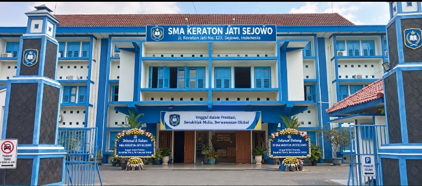
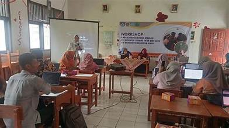
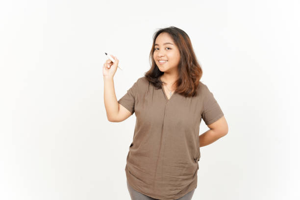
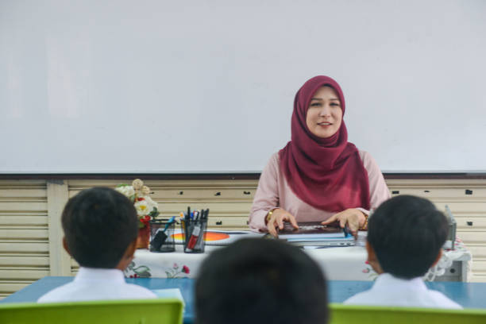
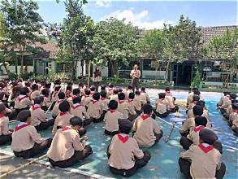
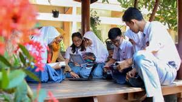
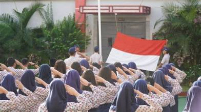
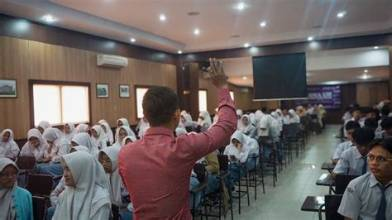

SMA Keraton Jati Sejowo merupakan sekolah menengah atas yang berkomitmen untuk menciptakan peserta didik yang berprestasi, berkarakter, kreatif, dan bertanggung jawab. Sekolah mendukung perkembangan akademik serta bakat siswa agar siap menghadapi tantangan masa depan.
Menjadi sekolah unggul yang menghasilkan generasi berprestasi, berakhlak mulia, mandiri, dan berwawasan global.
Pembelajaran dirancang untuk meningkatkan pengetahuan, keterampilan, dan kreativitas siswa.
Siswa dapat mengembangkan minat dan bakat melalui berbagai kegiatan di luar jam pelajaran.
Sekolah mendukung siswa untuk meraih prestasi akademik maupun non-akademik di berbagai tingkat.
Pendaftaran siswa baru untuk tahun ajaran 2026/2027 telah dibuka. Silakan hubungi kontak sekolah untuk informasi lebih lanjut.
Baca SelengkapnyaSiswa SMA Keraton Jati Sejowo berhasil meraih juara umum dalam kompetisi sains tingkat provinsi.
Baca Selengkapnya
Guru-guru mengikuti workshop pemanfaatan teknologi untuk meningkatkan kualitas pembelajaran di kelas.
Baca SelengkapnyaKepala Sekolah
Wakil Kepala Sekolah

Guru Matematika
Guru Bahasa Indonesia
Guru IPA

Guru IPS
Staf Tata Usaha
Staf Perpustakaan



